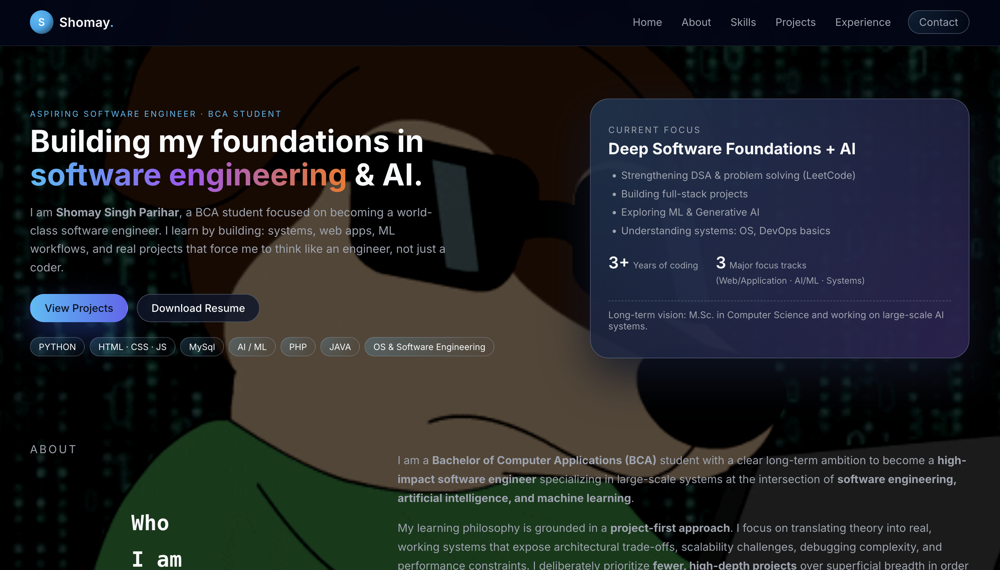

ReplyNest
Instagram Automation Platform
An Instagram automation platform designed to help businesses automate conversations and engagement workflows through Meta’s platform APIs.
Handles authentication, account connectivity, messaging workflows, database persistence, and containerized deployment with robust webhook handling.
Instagram Business APIsOAuth FlowsNode.jsPostgreSQLDockerTraefikVPS
Focus: API Architecture · Authentication · Automation · Backend Systems